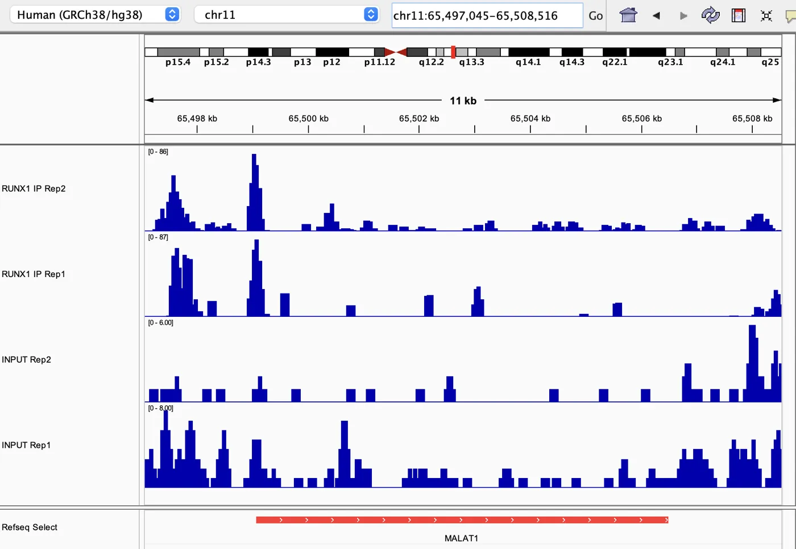
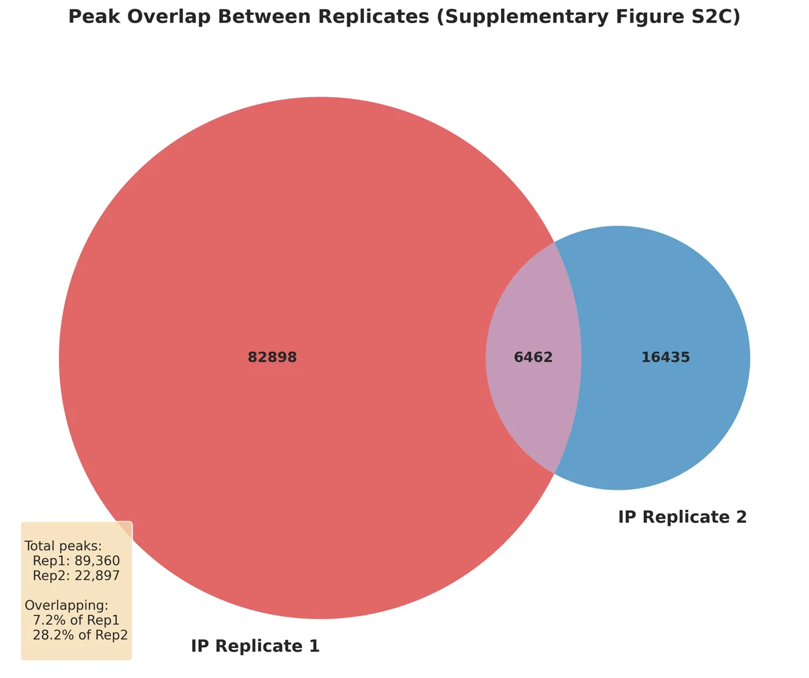
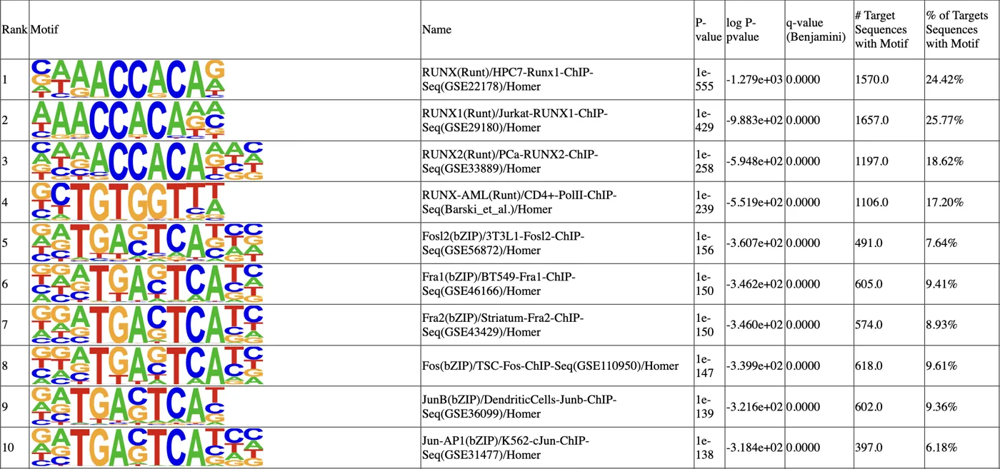

Project
ChIP-seq: RUNX1 Binding in MCF-7 Breast Cancer Cells
A Nextflow re-analysis of Barutcu et al. 2016 that maps RUNX1 binding genome-wide and ties it to gene expression after RUNX1 knockdown.
Goal
Identify direct RUNX1 targets by combining ChIP-seq peaks with RNA-seq from RUNX1 knockdown cells.
Data and methods
Each IP and input replicate is trimmed (Trimmomatic), checked (FastQC), aligned (Bowtie2) and converted to HOMER tag directories. HOMER calls factor-style peaks and discovers motifs, deepTools builds coverage, correlation and profile plots, and bedtools intersects peaks with the knockdown RNA-seq data (GSE75070). Enrichr summarizes target-gene pathways.
Code
process HOMER_FINDPEAKS {
container 'ghcr.io/bf528/homer_samtools:latest'
publishDir "${params.outdir}/homer/peaks", mode: 'copy'
label 'process_medium'
input:
tuple val(ip_sample), val(replicate), path(ip_tagdir), path(input_tagdir)
output:
tuple val(replicate), path("${ip_sample}_peaks.txt"), emit: peaks
script:
"""
findPeaks ${ip_tagdir} -style factor -o ${ip_sample}_peaks.txt -i ${input_tagdir}
"""
stub:
"""
touch ${ip_sample}_peaks.txt
Nextflow process: HOMER peak calling against input
Results



Tools
Links
Peaks plus knockdown expression data point to direct RUNX1 regulation across cell-cycle, DNA-damage and metabolic genes.